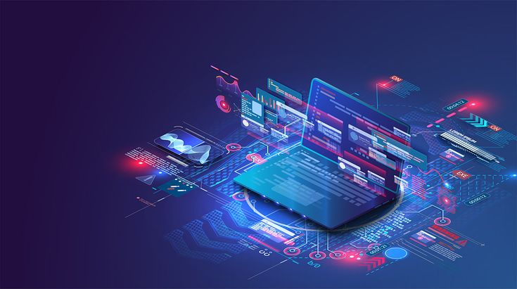

¿Qué es la Informática?
La informática es la ciencia que hace posible que una idea se convierta en un sistema funcional, inteligente y útil. Va mucho más allá de “usar computadoras”; se trata de crear soluciones, automatizar procesos, desarrollar programas, analizar datos y conectar personas y dispositivos en todo el mundo.
Imagina un mundo sin internet, sin aplicaciones,
sin redes sociales, sin videojuegos, sin
inteligencia artificial, sin sistemas bancarios o
médicos digitales...
Ese sería un mundo sin informática.
Es la disciplina que impulsa la innovación tecnológica,
combinando lógica, matemáticas, electrónica, creatividad
y resolución de problemas para dar forma al presente y al
futuro.
¿Por que estudiar infrmática?

Estudiar informática no solo te forma para un trabajo:
te forma para ser protagonista del futuro.
Cada línea de código que aprendes, cada algoritmo que
entiendes y cada sistema que desarrollas tiene el potencial
de transformar vidas, empresas y sociedades.
 Aquí te comparto razones clave para estudiar informática:
Aquí te comparto razones clave para estudiar informática:
🔍 Amplia salida laboral: Empresas de todos los sectores (salud, educación, comercio, industria, banca, entretenimiento) necesitan profesionales en tecnología. 🌐 *Carrera global:* Puedes trabajar desde cualquier parte del mundo, incluso desde casa. Las oportunidades son remotas, híbridas o presenciales.
Aquí te comparto razones clave para estudiar informática:
🔍 Amplia salida laboral: Empresas de todos los sectores (salud, educación, comercio, industria, banca, entretenimiento) necesitan profesionales en tecnología. 🌐 *Carrera global:* Puedes trabajar desde cualquier parte del mundo, incluso desde casa. Las oportunidades son remotas, híbridas o presenciales.
Estudiar informática no solo te forma para un trabajo:
💰 Alta remuneración: Es una de las profesiones
con mejor pago a nivel mundial.
💡 Innovación constante: La informática nunca se
estanca.

🧩 Desarrollo de habilidades clave: Mejora tu pensamiento lógico, tu capacidad de análisis, tu creatividad y tu disciplina. 🎯 Creas soluciones reales: Desde una app que resuelve tareas cotidianas hasta una herramienta que cambia la vida de miles.
🧩 Desarrollo de habilidades clave: Mejora tu pensamiento lógico, tu capacidad de análisis, tu creatividad y tu disciplina. 🎯 Creas soluciones reales: Desde una app que resuelve tareas cotidianas hasta una herramienta que cambia la vida de miles.
Estudiar informática es, en resumen,
convertirte en alguien capaz de imaginar
soluciones... y luego construirlas.
🌍 Importancia de la informática en la actualidad
En el siglo XXI, la informática no es una opción, es
una necesidad. Está en el corazón de casi todo lo que
usamos y hacemos a diario. Su impacto es transversal,
y su evolución no se detiene.
Veamos algunos de sus aportes clave:
📚 Educación: Plataformas como Google Classroom, Moodle o Zoom han revolucionado el aprendizaje. Hoy es posible estudiar desde cualquier lugar del mundo, gracias a la informática.
📚 Educación: Plataformas como Google Classroom, Moodle o Zoom han revolucionado el aprendizaje. Hoy es posible estudiar desde cualquier lugar del mundo, gracias a la informática.
🏥 Salud: Sistemas de diagnóstico por imagen,
inteligencia artificial médica, expedientes clínicos
digitales y citas virtuales han hecho que la salud
sea más rápida, precisa y accesible.
📲 Comunicación digital: Redes sociales,
correo electrónico, mensajería instantánea y
videollamadas han eliminado las barreras de
distancia y tiempo.
💼 Negocios y empresas: Desde pequeñas
tiendas hasta multinacionales usan software
para contabilidad, logística, atención al
cliente y ventas en línea.
🛡 Ciberseguridad: En un mundo digitalizado,
proteger los datos personales y empresariales se
ha convertido en una prioridad crítica.
🧠 Inteligencia Artificial y automatización:
Sistemas que aprenden, predicen y deciden
están cambiando industrias enteras.
La informática no solo cambia el mundo...
te da las herramientas para que tú también puedas cambiarlo.
te da las herramientas para que tú también puedas cambiarlo.
¿Y tú, estás listo para ser parte del cambio?
Ya sea que quieras crear aplicaciones,
diseñar videojuegos, programar robots o
desarrollar sistemas empresariales...
La informática te ofrece el camino para hacerlo realidad.
Contactame.
¿Por qué contactarme?
- 💡 Solicitar más información sobre la carrera.
- 🤝 Proponer charlas, talleres o actividades académicas.
- 📄 Enviar documentos o recursos relacionados.
- 🧠 Compartir ideas o sugerencias para mejorar el contenido.
Contacto directo
📬 Email: vale62030@gmail.com